1D ROMS model documentation
*DRAFT*
This 1D numerical model is derived from the UCLA ROMS 3D ocean model.
It keeps the array structure and the vertical position of the variables.
The mixing closure sub-model, the treatment of vertical advection and
diffusion are compatible with the UCLA ROMS 3D model.
The primitive hydrostatic equations of an ocean
with no horizontal variations on a Cartesian frame resumes to:
| 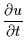 |
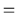 |
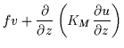 |
(1) |
| 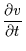 |
|
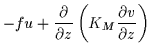 |
(2) |
| 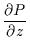 |
|
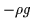 |
(3) |
| 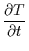 |
|
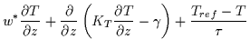 |
(4) |
| 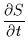 |
|
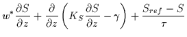 |
(5) |
| 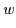 |
|
|
(6) |
|
|
 |
(7) |
With the vertical boundary conditions prescribed as follows:
| 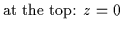 |
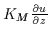 |
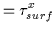 |
(8) |
| |
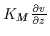 |
 |
(9) |
| |
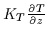 |
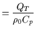 |
(10) |
| |
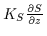 |
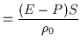 |
(11) |
| 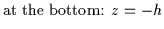 |
|
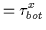 |
(12) |
| |
|
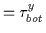 |
(13) |
| |
|
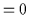 |
(14) |
| |
|
|
(15) |
Where,
- t is the time variable
- z is the vertical coordinate in the Cartesian frame,
increasing towards the top.
- u, v, w are components of the
velocity vectors in the Cartesian frame
- f is the Coriolis parameter
- T is the potential temperature of the Ocean
- S is the salinity of the Ocean
- 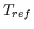 is the potential temperature data towards
which the temperature is relaxed
- S is the salinity of the Ocean
- 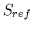 is the salinity data towards
which the salinity is relaxed
- 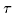 is the nudging relaxation time towards data
- P is the total pressure
- F is an equation of state of sea water
 is the in-situ density perturbation
is the in-situ density perturbation
- 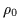 is the mean density
- g is the acceleration of gravity
- 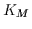, 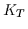, 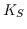 are the vertical
turbulent mixing coefficients, defined by the KPP vertical turbulent closure scheme
- is a nonlocal transport term in addition to the
down-gradient component
 , 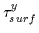 are the surface wind stress components
, 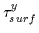 are the surface wind stress components
- 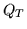 is the surface heat flux
- 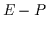 is the evaporation minus
the precipitation
- 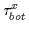, 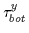 are the bottom stress components, they are
set to 0
- h is the depth of the water column
- 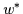 is an artificial vertical velocity introduced to take the effects
of an upwelling into account
Equations (1) and (2) express the momentum
balance in the x and y directions.
Under the hydrostatic approximation, the
momentum balance (equation 3)in the vertical direction limits
itself to a balance between the
pressure gradient and the buoyancy forces.
Equations (4) and (5)
express the time evolution of Temperature and Salinity.
Equation (6) expresses the continuity equation for an incompressible
fluid, that implies in a 1D model the vertical
velocities to be null.
Equation (7) gives the equation of state.
(setup_grid.F)
The equations of motion are discretized following a non-linear vertical
coordinate, in order to increase the resolution near the surface boundary layer.
The grid is staggered, with the 'w' points positioned between the '' points.
Figure 1:
Position of variables on the staggered grid.
| 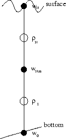 |
(set_forces.F)
The model has been setup to run on a yearly cycle using monthly forcing data.
These data are stored in an ASCII file 'forces.data':
SUSTR "surface u-momentum stress" "Newton meter-2"
| 0.0109 |
0.0148 |
0.0236 |
0.0248 |
0.0265 |
0.0242 |
| 0.0207 |
0.0204 |
0.0185 |
0.015 |
0.0125 |
0.0082 |
SVSTR "surface v-momentum stress" "Newton meter-2"
...
The temporal mean of the heat and salinity fluxes are removed in order to obtain a yearly
cyclic solution. A temporal linear interpolation is achieved to get the forcing at each
model time step. A diurnal cycle is added to the solar short-wave radiation flux as a
function of the latitude.
(step3dS.F)
An arbitrary vertical velocity can be introduced to account for a possible
upwelling that could bring tracers towards the surface (cpp key: UPWELLING).
This velocity is function
of an upwelling index (UPW [m/s/100m of coastline]) which is given by
the forcing file. Upwelling indices can be found at
http://www.pfeg.noaa.gov/products/PFEL/modeled/indices/upwelling/upwelling.html
The vertical velocity is defined in such a way that it is zero at surface and at bottom and
it is maximum at a given depth (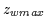 = -100 m, defined in step3dS.F).
Three different vertical profiles can be chosen:
- Linear (cpp key: LINEAR_W):
- Sinusoïdal (cpp key: SINUS_W):
- Parabolic (cpp key: PARAB_W):
Where,
-
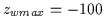 m is the vertical position of the maximum in vertical velocities
- 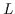 is the cross shore length scale of the problem. Here, 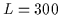 km.
If the upwelling is on, an additional term can be added in the tracer equation to take
into account the global horizontal transport induced by
the upwelling in the surface layers (cpp key: EXPORT):
In the model, this term takes the form:
(setup_initial.F)
The initial variables are set analytically. The horizontal velocities are set to zero (fluid at
rest). The tracer fields are given by a set of functions to fit a
CalCOFI data mean profile:
The initial value for the vertical mixing coefficients is 0.01 for momentum and 0.001 for tracers.
The model can is restart from a file if the cpp key RESTART_OUT is defined.
If the cpp key NUDGE is defined, temperature and salinity (and for the biology,
the nitrates) are relaxed towards their initial values with a relaxation time:
It is set such that it climbs to about 5 years
below 200 m but decreases to a max of 25 years at the surface.
(rho_eos.F)
The density, needed for the turbulent mixing closure scheme, is computed using the
equation of state for sea water proposed by Jackett and McDougall (1995).
The compression terms are neglected.
The parameterization of the vertical mixing processes
in ROMS is done via a non-local, K-profile planetary
(KPP) boundary layer scheme [Large et al.,1994].
Two distinct parameterizations are conducted: one for
the ocean interior and one for the oceanic surface
boundary layer. The boundary layer depth (h) depends on the
surface forcing, the buoyancy and the velocity profile.
It is determined by equating a bulk Richardson number
relative to the surface to a critical value. Below the
boundary layer, the vertical mixing is regarded as the
superposition of 3 processes: vertical shear,
internal wave breaking, and double diffusion.
In the surface layer, the diffusivity is formulated to
agree with similarity theory of turbulence. At the base
of the surface layer, both diffusivity and its gradient
have to match the interior values.
A non local convective transport is added to the local
down-gradient component.
The KPP model has been
shown to simulate accurately processes such as convective
boundary layer deepening, diurnal cycling, and storm forcing.
(lmd_vmix.F)
Richardson number:
double-diffusion density ration :
Where and are the thermodynamic expansion coefficients for
temperature and salinity.
- Salt fingering case: warm salty water over cold fresh water (
and
):
- Diffusive convection case: cold fresh water over warm salty water
( and
):
(lmd_kpp.F, lmd_swfrac.F, lmd_wscale.F)
Compute the depth () at which the bulk Richardson number
reaches its critical value (.
Where
is the turbulent velocity shear:
Where,
- : ratio of the interior Brunt-Väisälä frequency
to the Brunt-Väisälä frequency at the entrainment depth
- : ratio of entrainment buoyancy flux to surface buoyancy flux
- : von Kármán's constant
- constant used in the calculation of the dimensionless flux profiles
- non-dimensional extent of the surface layer
- Brunt-Väisälä frequency
- turbulent velocity scale for scalars
In case of stable buoyancy forcing (), is taken as the minimum of
the computed above, the Monin-Obukov length
 and the Ekman depth
, where
is
the friction velocity and
is the forcing buoyancy. is the thermal expansion
coefficient and is the saline contraction coefficient.
and the Ekman depth
, where
is
the friction velocity and
is the forcing buoyancy. is the thermal expansion
coefficient and is the saline contraction coefficient.
- for scalars:
![\begin{displaymath}
w_s=\left\{
\begin{array}{ll}
\kappa \sqrt[3]{-28.86u^{*3}...
...w^{*3}}
& \mbox{for } \sigma \ge \epsilon
\end{array}\right.
\end{displaymath}](img103.png) |
(38) |
- for momentum:
Where is a cubic polynomial, such as
|
|
|
(41) |
 |
|
|
(42) |
|
|
|
(43) |
|
|
 |
(44) |
The nonlocal transport term is nonzero only for
scalars in unstable forcing conditions:
The program has been compiled on SGI and Sun workstations.
The system-dependent part of the Makefile is Makedefs.
A tar file containing the program is available at
http://www.atmos.ucla.edu/penven/roms1d
(cppdefs.h)
Before compiling, different options can be chosen by defining different
cpp preprocessing keys in the file cppdefs.h.
- SALINITY: define if using salinity
- NONLIN_EOS: define if using nonlinear equation of state
- LMD_MIXING: select the Large/McWilliams/Doney interior mixing
- LMD_RIMIX: add diffusivity due to shear instability
- LMD_CONVEC: add convective mixing due to shear instability
- LMD_DDMIX: add double-diffusive mixing
- LMD_KPP: select Large/McWilliams/Doney Oceanic
Planetary Boundary Layer scheme
- LMD_NONLOCAL: turn on or off nonlocal transport
- BIOLOGY: turn on or off the biological module
- BIO_OCEAN: set the biological module to oceanic species
- UPWELLING: turn on or off the upwelling
- LINEAR_W: linear profile of vertical velocities
- SINUS_W: sinusoidal profile of vertical velocities
- PARAB_W: parabolic profile of vertical velocities
- EXPORT: parameterization of horizontal transport
- OXYGEN: define if using oxygen
- NCARG: define if using in-line NCAR graphics plotting routines
- NUDGE: nudging of tracers towards the initial values
- RESTART_OUT: define if writing in a restart output file
- RESTART_IN: define if reading initial values in a restart input file
- BIN_OUTPUT: define if writing in a binary output file
- ASCII_OUTPUT: define if writing in an ASCII output file
The number of vertical levels (N), the Coriolis parameteris (f)
and the latitude (latr) are defined in the file param.h.
The water column total depth (hmax) and the grid streching parameter
(theta_s) are defined in the file setup_grid.F.
If not restarting the simulation from a file, initial analytical
values of the variables can be changed in the file setup_initial.F.
The arbitrary function defining the rate of upwelling can be changed
in step3dS.F.
For the moment, the running parameters are defined in main.F.
- dt: time step in seconds
- ntimes: total number time-steps in current run
- nwrite: number of time-steps between making a plot
- noutput: number of time-steps between writing in output file
- nrestart: number of time-steps between writing in restart file
- twrite: number of days before starting to write and to plot
Choose a Makedefs.* that match your system and copy it to Makedefs
type make clobber and make all
- make clobber: remove all the executables, the .o files,
the .dat files ...
- make clean: remove all the .o files
- make tools: compile mpc (precompiling processor designed
to work between CPP and FORTRAN compiler) and cross_matrix
(analyzer of dependencies to build the dependencies ``Make.depend'')
- make depend: apply cross_matrix
- make roms1d: compile the program
- make all: tools + depend + roms1d
The model has been setup in a way that it reads monthly forcing values.
The forcing values are stored in the file forces.data.
SUSTR "surface u-momentum stress" "Newton meter-2"
| 0.0109 |
0.0148 |
0.0236 |
0.0248 |
0.0265 |
0.0242 |
| 0.0207 |
0.0204 |
0.0185 |
0.015 |
0.0125 |
0.0082 |
These values correspond to the months:
| January |
February |
March |
April |
May |
June |
| July |
August |
September |
October |
November |
December |
This setup can be changed in the file set_forces.F.
Type ``roms1d'' alone or ``roms1d roms.out SPMamp;'' to have a record
of the model evolution
- If the cpp key NCARG is defined, the NCAR Graphics routines produce a
gmeta file containing an image every nwrite time-step during the simulation.
This file can be used for a quick check of the results.
- If the cpp key BIN_OUTPUT is defined, all the velocities, all the tracers
and the depth of the surface oceanic boundary layer are stored every noutput time-step
in single precision into the binary file ``fort.70'', using the command:
write(70) u,v,t,h
- If the cpp key ASCII_OUTPUT is defined, the depth of the vertical levels are
stored in the file ``z.dat'', and every noutput time-step,
- the time is stored in the file ``days.dat''
- the depth of the oceanic boundary layer is stored in the file ``zbl.dat''
- the horizontal velocities are stored in the files ``u.dat'' and ``v.dat''
- all the tracers are stored in the files ``tXX.dat'', where XX is 01 for temperature,
02 for salinity, ...
The variables stored in the ASCII files can be visualized with MATLAB using the function
``tzplot(vname)'', where vname is the name of the variable: ``u'', ``v'', ``t01'', ``t02''...
- If the cpp key RESTART_OUT is defined, every nrestart time-step,
all the velocities and all the tracers are stored in double precision
into the binary file ``fort.50'', using the command:
write(50) u,v,t
The number of restart outputs is stored in the ASCII file ``fort.51''.
-
- 1
-
Jackett, D. R. and T. J. McDougall,
Minimal Adjustment of Hydrostatic Profiles to Achieve Static Stability,
J. Atmos. Oceanic Techn.,
12,
381-389,
1995.
- 2
-
Large, W. G., J. C. McWilliams, and S. C. Doney,
Oceanic vertical mixing: a review and a model
with a nonlocal boundary layer parameterization,
Rev. Geophys.,
32,
363-403,
1994.
This document was generated using the
LaTeX2HTML translator Version 2K.1beta (1.50)
Copyright © 1993, 1994, 1995, 1996,
Nikos Drakos,
Computer Based Learning Unit, University of Leeds.
Copyright © 1997, 1998, 1999,
Ross Moore,
Mathematics Department, Macquarie University, Sydney.
The command line arguments were:
latex2html -split 0 -white -show_section_numbers -no_navigation doc1d.tex
The translation was initiated by Penven Pierrick on 2001-06-11
Penven Pierrick
2001-06-11